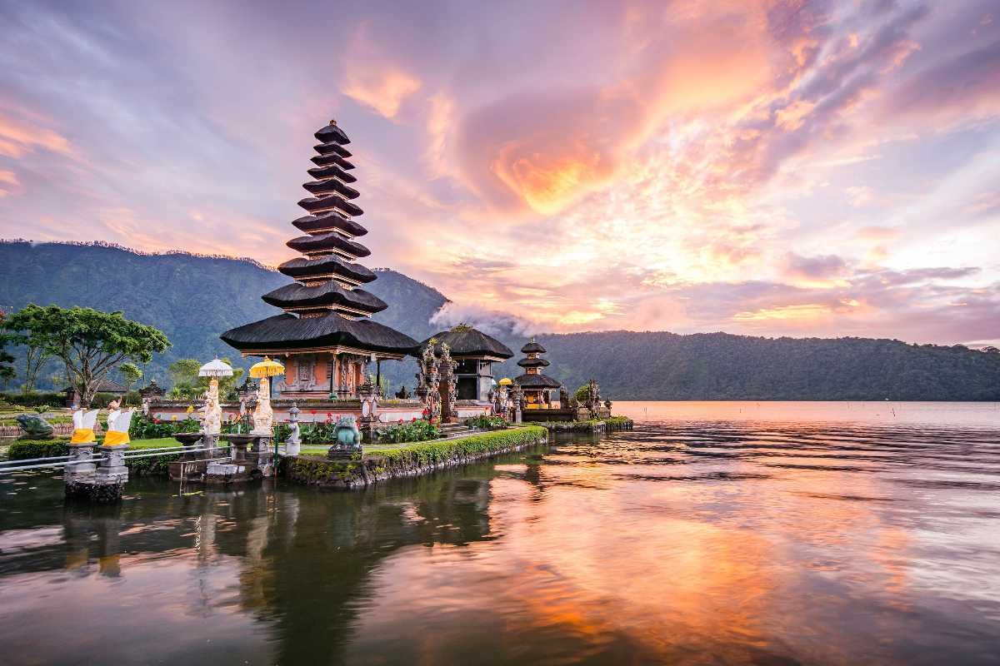

Danau Toba
Lake Toba is an extraordinary natural wonder of the world. This enormous crater lake consists of an island almost the size of Singapore in its center. At over 1,145 square km, and a depth of 450 meters, Lake Toba is actually more like an ocean.
More
Pulau Komodo
Go on an adventurous escapade to the amazing island of Komodo that’s a part of the magnificent Komodo National Park. Take a flight from Bali or Jakarta, or a ferry from Lombok to reach Labuan Bajo and then take a boat to Komodo Island, Indonesia.
More

Bali
Who doesn’t want a refreshing Instagram feed that is visually pleasing and shows your great adventures all at once? Well for those who are planning a holiday trip to Bali, these 15 destinations will guarantee to make your pictures amazing!
More